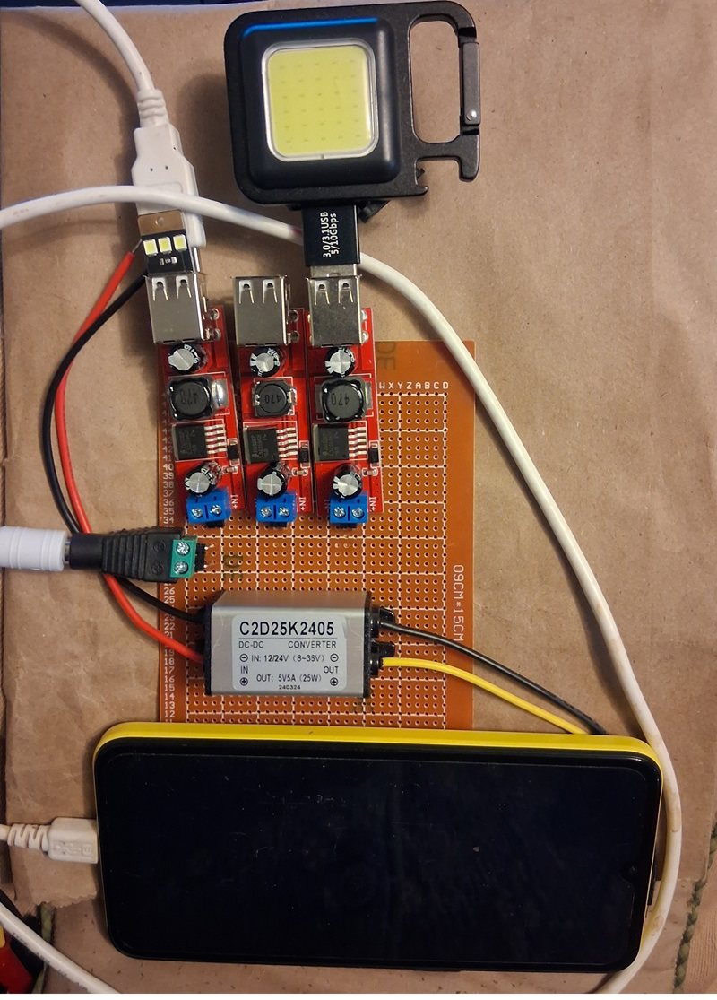
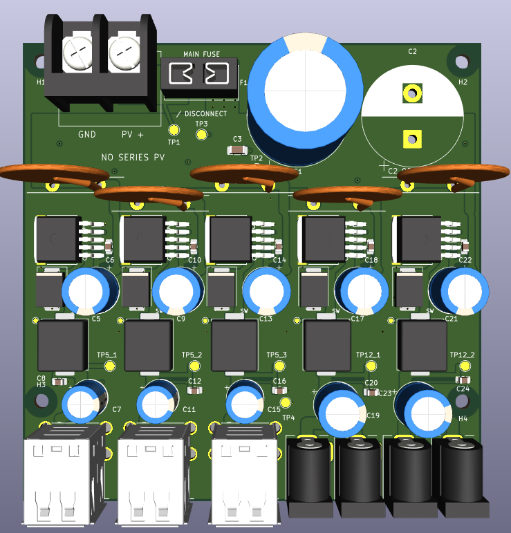
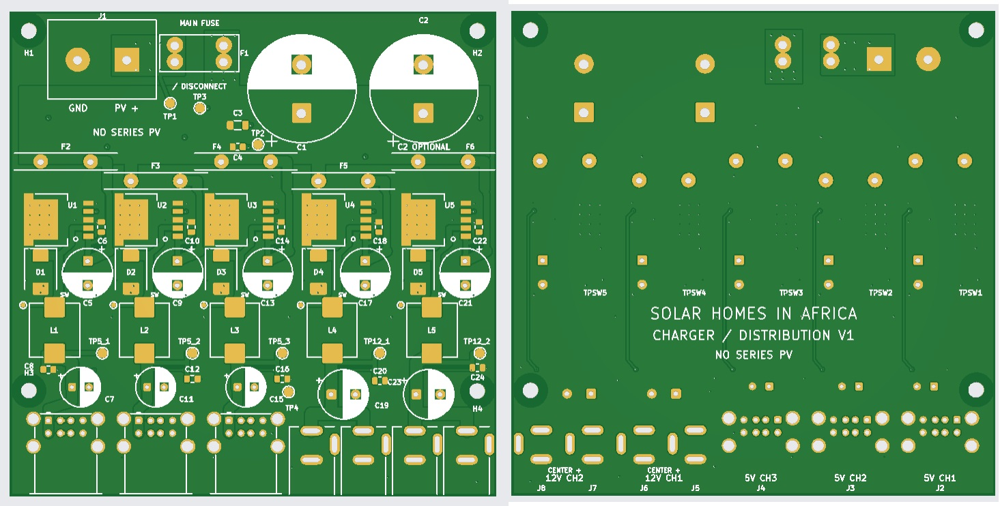
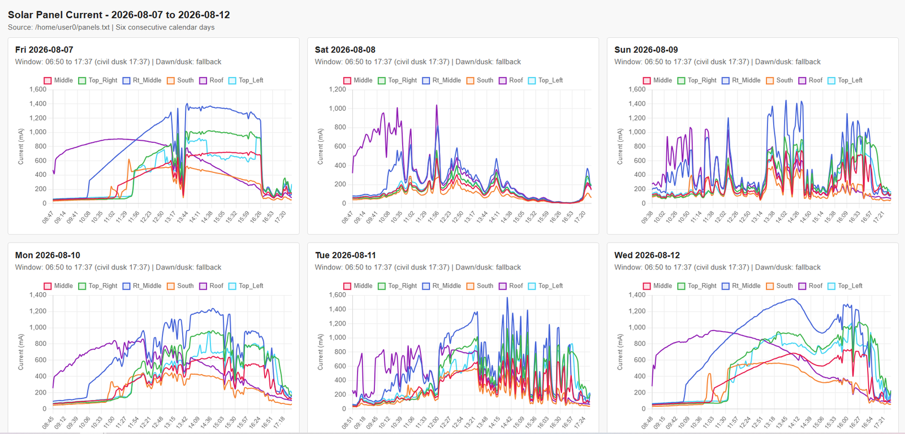
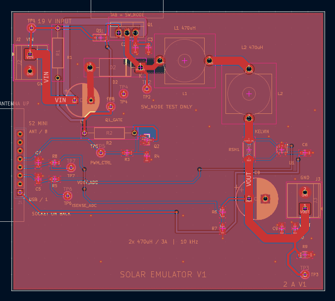
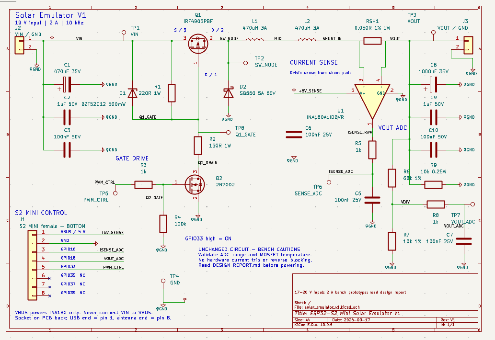
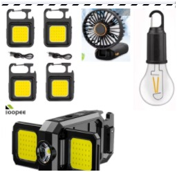
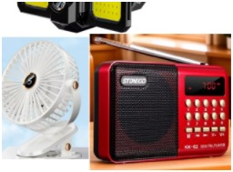
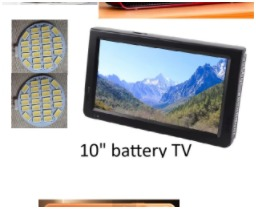
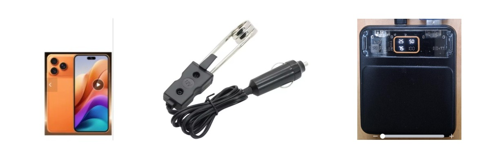

Be generous with PV watts
Commodity rigid panels can be remarkably inexpensive per watt. The entry system aims to use enough panel area that charging does not depend on squeezing every last percent through expensive electronics.
Explore a radically simple household solar system built around inexpensive photovoltaic watts, rechargeable appliances, field-serviceable parts and a path to larger systems as a household’s needs grow.
This is a development site, not a product offer. Costs, specifications and financing shown here are working targets under test.

Conventional solar home systems concentrate cost in a battery, inverter and controller. This project asks whether the first useful rung can be much simpler: a commodity solar panel feeding efficient DC converters and appliances that already contain their own small rechargeable batteries.
Commodity rigid panels can be remarkably inexpensive per watt. The entry system aims to use enough panel area that charging does not depend on squeezing every last percent through expensive electronics.
Lights, fans, radios, phones and small televisions can carry their own batteries. That avoids a single central battery becoming the cost and failure point of the whole household system.
USB and low-voltage DC cover a surprising range of useful loads. An inverter becomes an upgrade rather than a requirement on day one.
Connectors, replaceable modules and straightforward wiring matter. A field technician should be able to isolate a failed branch and replace a low-cost part without specialized equipment.
A second panel, larger storage, 24 V loads or a future inverter should add capability without discarding the useful appliances and PV already purchased.
Clouds, low sun and repeated brownout/recovery matter more than a perfect bench supply. The development rig is being built to replay measured solar profiles and expose bad charger behavior early.
The distributor can mount immediately above a simple shelf so appliances stay organized, off the floor and close to short charging leads.
This is deliberately ambitious: explore a ten-year program capable of bringing 200 million African households to at least a useful Tier-2 level of electrical service, with voluntary, self-funded progression toward much larger systems. What do the tiers mean?
At least Tier-2-scale useful electricity: lighting, communications, fans and other low-power household services.
Additional PV, storage and power capability as household demand and ability to pay increase.
Full household electrical service for a first large cohort. The broader aspiration remains a path to Tier 5 for everyone.
The first breadboarded distribution unit uses several inexpensive USB buck modules. A rechargeable COB light is bright while charging, and an old cell phone successfully returned to service after being connected to the prototype.
The first integrated distributor PCB has now been laid out and ordered for prototype fabrication. It combines three independent 5 V buck-converter channels feeding six USB-A sockets with two independent 12 V channels feeding four barrel-jack outputs.


A programmable bench source is being built around an ESP32-S2 Mini and a buck power stage. It will replay measured Nova Scotia solar-current profiles so charger recovery can be tested against passing clouds, poor mornings and repeated power collapse—not just a laboratory supply.



A working financing hypothesis is deliberately simple: make the upfront hurdle small, let the household own the system after a fixed period, and use repayment history as a bridge to larger solar rather than adding complicated lockout electronics to every entry system.
That produces US$82 in nominal receipts. The present working cost model is roughly US$55–60 of hardware plus field installation and infrastructure. Real financing cost, payment fees, defaults, warranty and local operating costs still have to be demonstrated.
A useful reason to design for upgrades is that household solar can support income as well as lighting and communications. A 2019 GOGLA/Altai Consulting follow-up study tracked PAYGo solar-home-system customers in five East African countries and revisited them about 15 months after purchase.
The study revisited customers well after the first novelty period rather than measuring only the first weeks of ownership.
Twenty-eight percent of households reported additional income associated with economic activity using their solar home system.
For households reporting additional income, the reported increase averaged about US$46 per month.
What this does—and does not—show: the research covered 1,419 solar-home-system owners in Kenya, Mozambique, Rwanda, Tanzania and Uganda. It was observational rather than a randomized trial, so the result should not be read as a promise that solar will raise every household's income—or as a number that can simply be multiplied by universal access. The report found that 21% of systems were being used in a business or income-generating activity after 15 months. Among those businesses, paid phone charging was common: 39% named it as the primary activity and 48% offered charging as a service. The report explicitly notes that this customer base shrinks as neighbors acquire their own solar systems. Those early-adopter scarcity rents should therefore be separated from more durable benefits such as longer working hours, a reliably charged phone, avoided charging and kerosene trips, and electricity used as an input to other businesses. GOGLA, Powering Opportunity in East Africa (2019) ↗
The entry system should support things a household actually wants to add. The most interesting options either use daylight directly or bring their own storage.




Representative appliance types, not a locked bundle or vendor recommendation. Exact products, battery capacities and charging behavior still need field testing.
Small batteries move with the appliance instead of being concentrated in one expensive central pack.
When the sun is strong, some work is cheaper to do immediately than to route through a battery.
This is intentionally public before it is polished. The point of the site is to document what is being built, what has actually worked, and what remains only an attractive hypothesis.
Important: This site documents research and prototype development. It is not currently soliciting customers, investments or donations, and no prices or performance figures should be treated as a commercial offer.